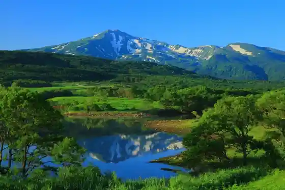
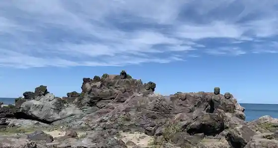
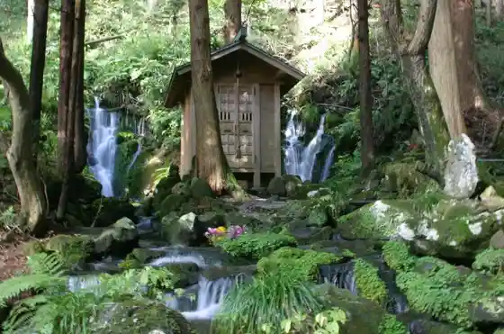
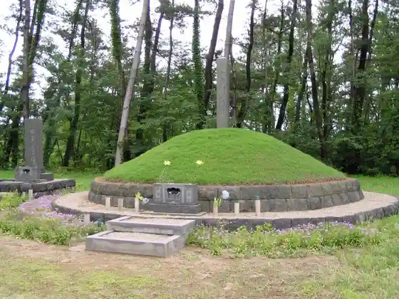

Maruike Sama
Yuza, Yamagata · 0234-72-5666 · Official / source link
Chokaisan
Yuza, Yamagata · 0234-72-5886 · Official / source link

Juroku Rakan Iwa
Yuza, Yamagata · 0234-72-5666 · Official / source link

Dobara Taki
Yuza, Yamagata · 0234-72-5666 · Official / source link

Ishihara Kanji no Haka
Yuza, Yamagata · 0234-72-5666 · Official / source link

Chokai Buru Line 2025 Nen 4 Gatsu 25 Higai Tori
Yuza, Yamagata · 0234-72-5666 · Official / source link
Roadside Station Chokai
Yuza, Yamagata · 0234-71-7222 · Official / source link
Kama Iso Beach
Yuza, Yamagata · 0234-72-5886 · Official / source link
Ushiwata Kawa
Yuza, Yamagata · 0234-72-5666 · Official / source link
Guriinsutoa
Yuza, Yamagata · 0234-72-3111 · Official / source link
Ichi no Taki (Yuza)
Yuza, Yamagata · Official / source link
Noringyogyo Taiken Jisshu Kan (Sanyu) Chokaisan no Yusui Wo Tanno ♪
Yuza, Yamagata · 0234-72-4500 · Official / source link
Chokaisan Omono Ki Jinja Fukiura Kuchi no Miya
Yuza, Yamagata · 0234-77-2301 · Official / source link
Chokai Mikami no Mizu
Yuza, Yamagata · 0234-72-5666 · Official / source link
Nishihama Campground
Yuza, Yamagata · 0234-77-3600 · Official / source link
Chokaisan Omono Ki Jinja Warabioka Kuchi no Miya
Yuza, Yamagata · 0234-77-2301 · Official / source link
Kamiizumi no Mizu
Yuza, Yamagata · 0234-72-5666 · Official / source link
Ni no Taki (Yuza)
Yuza, Yamagata · 0234-72-5666 · Official / source link
Chokai Onsen Yuraku Sato
Yuza, Yamagata · 0234-77-3711 · Official / source link
Nishihama Beach
Yuza, Yamagata · 0234-72-5666 · Official / source link
Dewa Futami
Yuza, Yamagata · 0234-72-5666 · Official / source link
Takase Kyo
Yuza, Yamagata · 0234-72-5666 · Official / source link
Chokaisan Tatsugashira Tera (Shingonshu Chizan Ha) / Shonai Sanju San Kannon Dai 19 Ban
Yuza, Yamagata · 0234-72-2553 · Official / source link
Misaki Park
Yuza, Yamagata · 0234-72-5666 · Official / source link
Kyu Aoyama Hontei
Yuza, Yamagata · 0234-75-3145 · Official / source link
Chokaisan Omono Ki Shrine Honden
Yuza, Yamagata · 0234-77-2301 · Official / source link
Nishihama Koteji Village
Yuza, Yamagata · 0234-77-3600 · Official / source link
Chokai Onsen Hoyo Center Apon Nishihama
Yuza, Yamagata · 0234-77-3333 · Official / source link
Gekko Kawa Damu Shuhen
Yuza, Yamagata · 0234-72-5666 · Official / source link
Sake no Tsukamidori Taikai
Yuza, Yamagata · 0234-72-5666 · Official / source link
Yuza no Dento Kyodo Shoku (Sasa Maki) Zukuri Experience
Yuza, Yamagata · 0234-72-2069 · Official / source link
Ju Satozuka Beach
Yuza, Yamagata · Official / source link
Yamamoto Bo Garden
Yuza, Yamagata · 0234-72-5666 · Official / source link
In Falls
Yuza, Yamagata · 0234-72-5666 · Official / source link
Gekko Kawa Kasenjiki
Yuza, Yamagata · 0234-72-5666 · Official / source link
Matsukawa Yama Umi Zendera (Soto Shu) / Shonai Sanju San Kannon Dai 16 Ban
Yuza, Yamagata · 0234-77-2101 · Official / source link
Yuza Katari Be no Kan
Yuza, Yamagata · 0234-72-5892 · Official / source link
Ohira Sanso Setsubi Shuzen no Tame 2026 Nen Eigyokyushi
Yuza, Yamagata · 090-2607-2326 · Official / source link
San no Taki (Yuza)
Yuza, Yamagata · 0234-72-5666 · Official / source link
Yuza Rekishi Minzokugaku Shu Kan
Yuza, Yamagata · 0234-72-5892 · Official / source link
Kumano Shrine (Yuza)
Yuza, Yamagata · 0234-72-5666 · Official / source link
Tsurugi Ryu Taki
Yuza, Yamagata · 0234-72-5666 · Official / source link
Nakayama River Park
Yuza, Yamagata · 0234-72-5666 · Official / source link
Otaki (Yuza)
Yuza, Yamagata · 0234-72-5666 · Official / source link
Eisen Tera
Yuza, Yamagata · 0234-72-5666 · Official / source link
Chokaisan no Fumoto De Taiken Suruomoshiro Shizen Juku (Soba Uchi Experience)
Yuza, Yamagata · 0234-72-2069 · Official / source link
Oizumi Bocho Ya Mon
Yuza, Yamagata · 0234-72-5666 · Official / source link
Sato Masayoshi Hi
Yuza, Yamagata · 0234-72-5666 · Official / source link
Chokaisan Matsuba Tera (Shingonshu Chizan Ha) / Shonai Sanju San Kannon Dai 21 Ban
Yuza, Yamagata · 0234-94-2361 · Official / source link
Chokaisan Tozan
Yuza, Yamagata · 0234-72-5886 · Official / source link